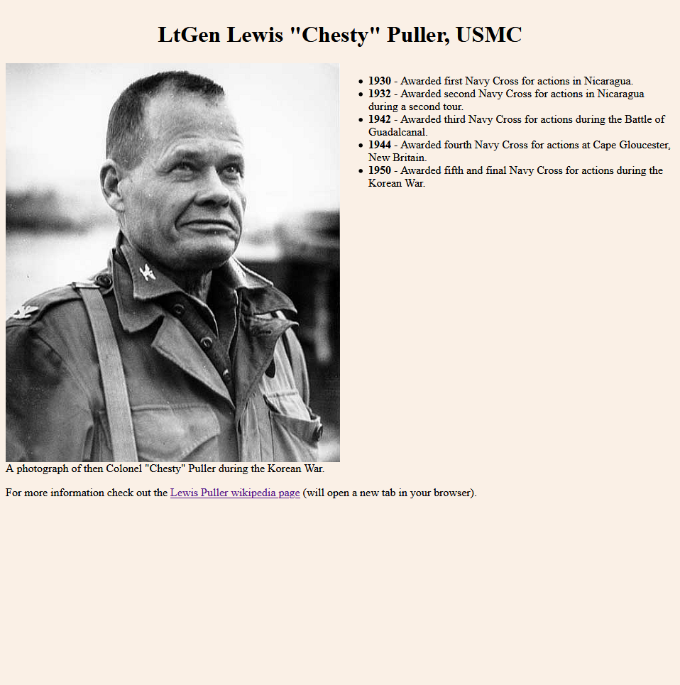
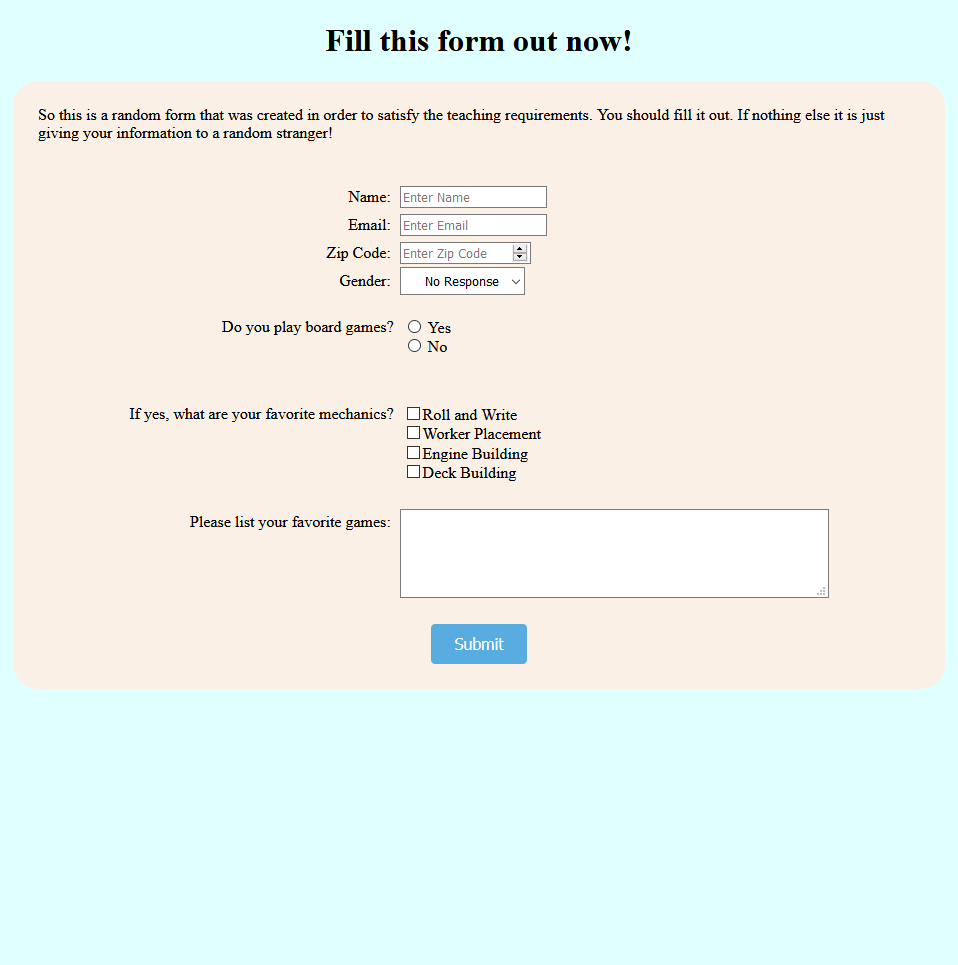
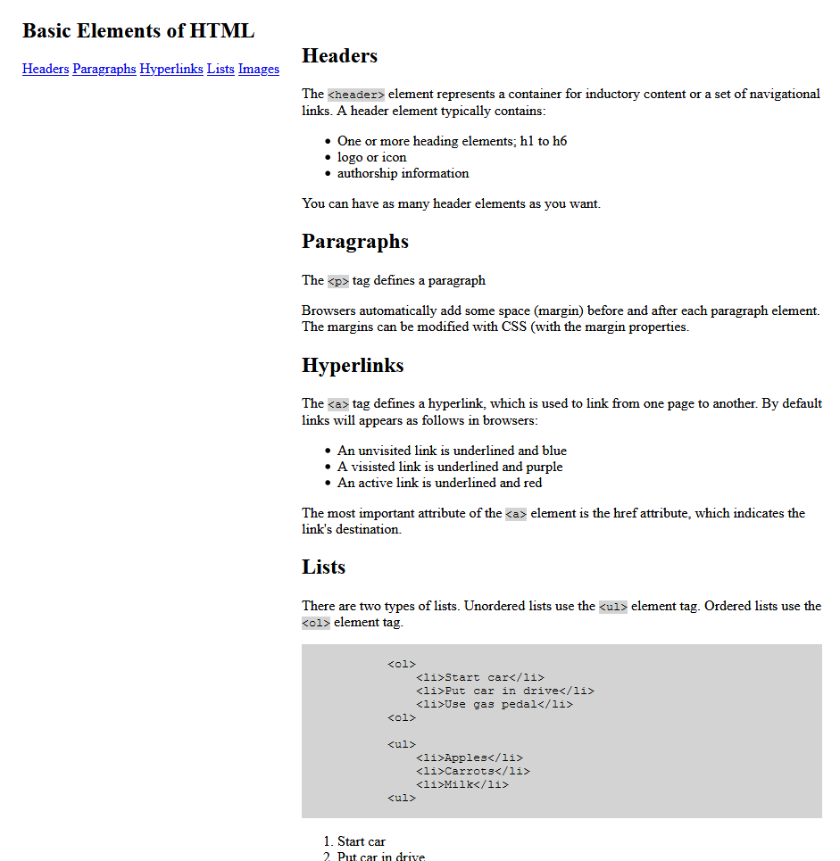

My name is Nate and I am learning front end web design. I have a BS in history from USNA and a MS in Data Analytics from UMGC. I started this journey during the COVID-19 crises in 2020. I focused first on Harvard's CS50 course which at this point I am still working on.
Below are a few of the projects I have created while working through the various curriculum.
  Today is . This page was created on and that was days ago. It was last updated on which was days ago.